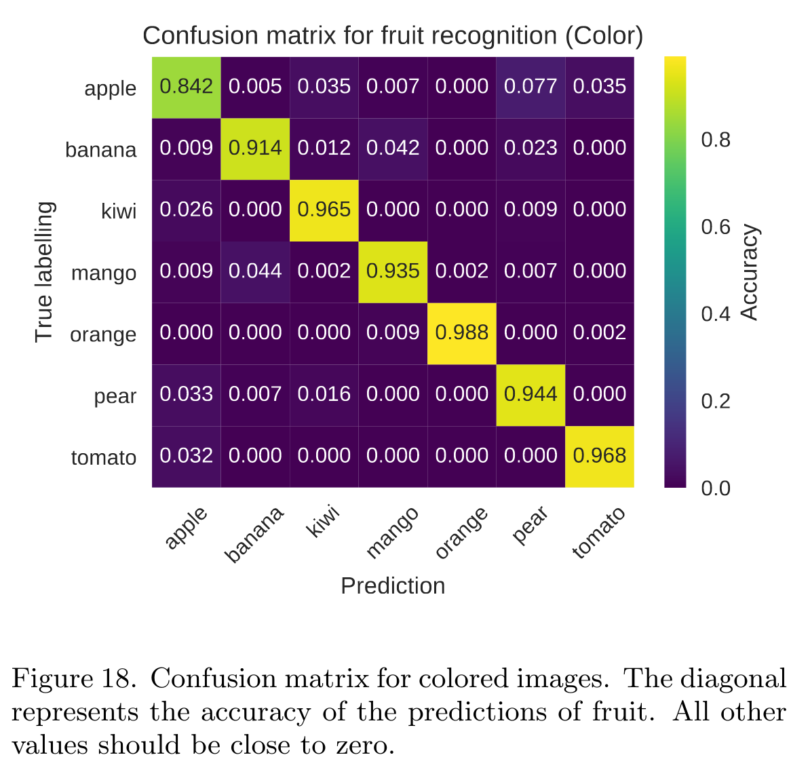

Project 3 FYS-STK4155 Autumn 2020
Senior developer: Jonas T. Faber, Junior developers: Jacob Lie & Elias R. Udnæs
Convolutional Neural Networks on fruit recognition
In this project, we analyse a dataset consisting of labelled images of fruit. The dataset is publically available through Kaggle here. To download the part of the dataset we use, and what is needed to run our codes: https://easyupload.io/qa0u65 (3.4 GB)
Extract the folder images to the repository (Project3). If you can't access the dataset for whatever reason, or don't trust the website, contact us @ m.e.r.udnas@fys.uio.no and we'll send you a dropbox folder with the data.
We use the Feed Forward Neural Network (FFNN) developed in FYS-STK Project 2, and a Convolutional Neural Network (CNN) from tensorflow using Keras API. The CNN was made with 2D convolution layers (e.g. spatial convolution over images) with Conv2D layer.
Selected results can be found under the folder results.
Source code is found under the folder src, with documentation on how to run selected scripts.
Selected results
